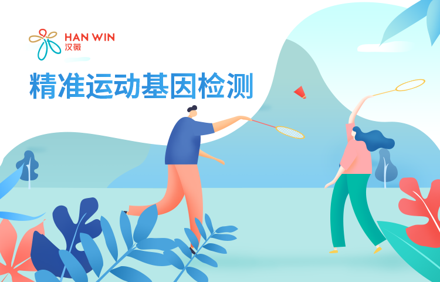
检测结果
分享
天生耐力强
运动易疲劳
膝部较易受伤
多摄入维生素D
运动不易中暑
肩部易受伤
适宜上午运动
运动表现
了解先天运动优势，选择合适自己的运动方式。
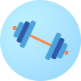
耐力VS爆发力 >
偏向耐力
均为中等
偏向爆发力
锻炼提升耐力效果 >
较慢
中等
较快
运动效果
认识运动对身体的作用特点，高效利用运动改善身体状况。
运动时体温升高速度 >
慢
较快
快
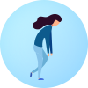
运动疲劳程度 >
较低
较高
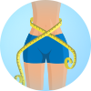
运动减肥效果 >
较差
中等
较好
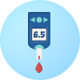
运动改善血糖效果 >
较慢
中等
较快
运动改善血压效果 >
较慢
中等
较快
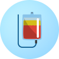
运动改善血脂效果 >
较慢
中等
较快
运动保护
知晓运动损伤风险，合理进行运动规划。
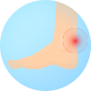
跟腱保护能力 >
较弱
中等
较强
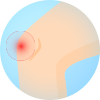
膝盖前交叉韧带保护能力 >
较弱
中等
较强
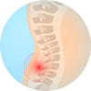
腰椎间盘保护能力 >
较弱
中等
较强
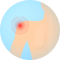
肩袖保护能力 >
较弱
中等
较强
运动营养&生活
掌握自身特质，运用科学的营养和生活模式，优化运动效果
碳水化合物的选择 >
低GL食物
中/低GL食物
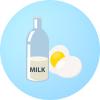
蛋白质的选择 >
含乳糖
不含乳糖
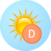
运动对维生素D的需求 >
高
较高
正常
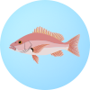
运动对Omega-3的需求 >
高
较高
正常
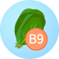
运动对叶酸的需求 >
高
较高
正常
咖啡因对运动的影响 >
较弱
较强
适宜运动时间 >
上午
晚上